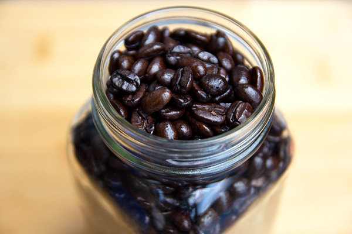
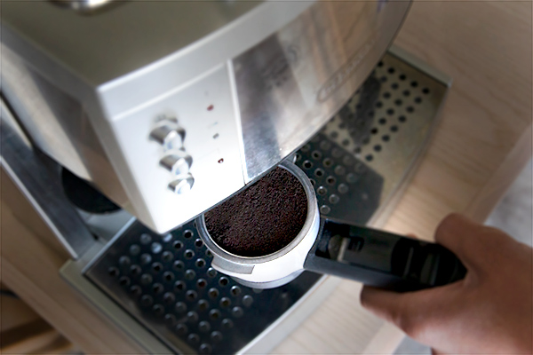

Tips for making a great coffee
Buy fresh, whole bean coffee
A cup of coffee is only as good as the beans you start with. If you're buying bags of preground coffee, you're doing it wrong. Instead, start with fresh, whole beans.
There's a reason most coffee companies don't provide the date for when the coffee was roasted; the stuff you find on the shelf in the grocery store has probably been there for months. Coffee reaches its peak flavor just days after it has been roasted and should be consumed within a month of its roast date.
To find fresh coffee, check local coffee shops. Some roast on the spot or source from local roasters who roast in smaller batches, which typically means fresher coffee.

Store beans properly
If you know that you are using your beans in the immediate future, you can use short mason jars or sauce jars. If you have nothing else to use, a Gatorade bottle can work.
Since you will be using your beans relatively quickly, having a jar with a wide mouth is usually optimal. Make sure that you keep as much sunlight away from the beans as possible.
Do not put the jar on your windowsill to be an easy target for the sun.
Grinding your coffee
Coffee begins to lose its flavor within 30 minutes of being ground. This being the case, it's best to grind on the spot, just before brewing a pot.
Grind size and consistency matter quite a bit, as well. Grind too coarse and you will have a weak pot of coffee. Grind too fine and you will over-extract the coffee and it will taste bitter. Most drip coffee makers call for a medium to medium-fine grind.
Unless you want to spend money on a quality automatic burr grinder, a manual hand mill is the most affordable way to achieve a nice, consistent grind, though they do require a small amount of manual labor.

Making the perfect expresso
To make the perfect espresso you need to have the proper espresso machine, a good coffee grinder, and excellent coffee. Minimally, you need a pump-driven machine delivering at least 9 bars of pressure. (Note: 1 bar = 1 Megadyne per square centimeter = 0.987 atmospheres.)
The espresso machine should have a boiler, and two sizes of portafilters (one for single, and another for double shots). Ideally, the coffee used for making espresso should be freshly roasted. For best results, try to use 100% Arabica beans. Robusta is strong, but is usually of poorer quality, having a harsher flavor.